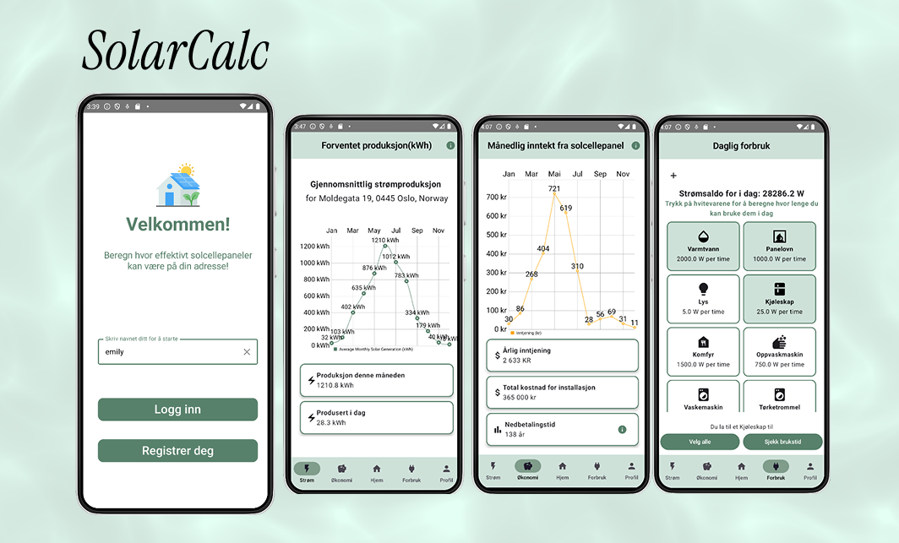

2025
SolarCalc
En Android-app som oversetter komplekse vær-, tak- og energidata til forståelige estimater for produksjon og sparing ved installering av solcellepanel for norske bolig- og hytteeiere.
- Min rolle
- UX-design & utvikling
- Varighet
- 8 uker
- Verktøy
- Figma, Kotlin, API
- Metode
- Scrumban, intervjuer & brukertesting

01 · Problemet
Solcellepanel gjort enkelt
Interessen for solceller er stor, men beslutningsgrunnlaget er ofte komplekst og teknisk.
Vi ville samle lokasjon, værdata og takdetaljer i én app og gi brukere som vurderer solcellepaneler et tydelig bilde av mulig produksjon, kostnad og sparing. For hytter uten strømnett skulle løsningen også gjøre forbruk fra ulike apparater synlig.
Problemstilling: Hvordan gjør vi en teknisk beregning forståelig nok til å støtte en stor beslutning?
02 · Prosessen
Bygge, teste, forenkle
Vi jobbet smidig og lot brukerinnsikt styre hvilke detaljer som faktisk fortjente plass.
Teamet definerte funksjonelle og ikke-funksjonelle krav før vi avgrenset en MVP med adresseoppslag, værdata, solutbytte og produksjonsestimat. Vi brukte Crazy 8s, wireframes og intervjuer for å validere tidlige konsepter.


- 01Input måtte være enklere og kreve mindre teknisk forkunnskap.
- 02Grafer trengte tydelige etiketter og en forklaring på hva tallene betydde.
- 03Kontekstuell hjelp fungerte bedre enn en separat informasjonsside.
API-begrensninger og tidsfrister tvang fram prioritering. Vi brukte tilgjengelige statiske datasett der data manglet og valgte kjerneflyten fremfor en bred funksjonsliste. Geriljatesting bekreftet at den enklere navigasjonen og veiledningen ga bedre forståelse.
03 · Resultatet
Forståelig data
En fungerende, brukertestet app som gjør energivalg mer konkrete.
SolarCalc beregner forventet solenergiproduksjon med vær- og takdata, visualiserer forbruk og sparing, og forklarer informasjonen der brukeren trenger den. Før levering gjennomførte teamet en teknisk oppryddingsdag for kvalitet og delt eierskap.


Neste prosjekt